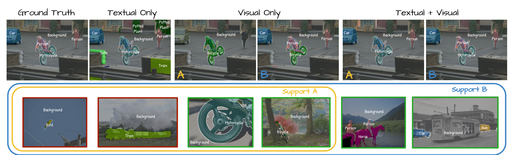
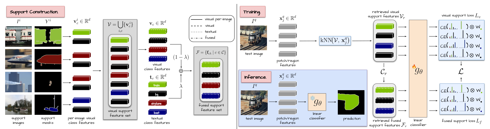
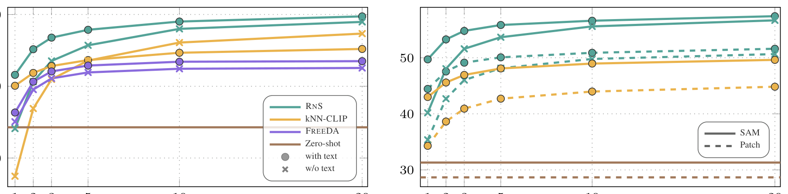
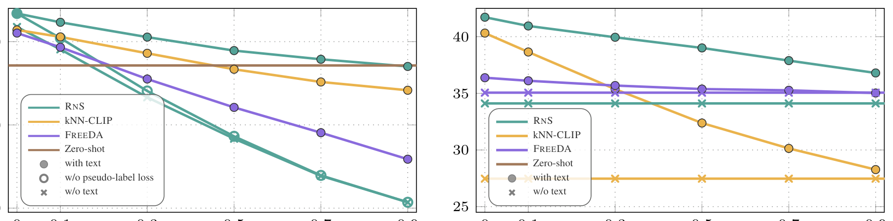
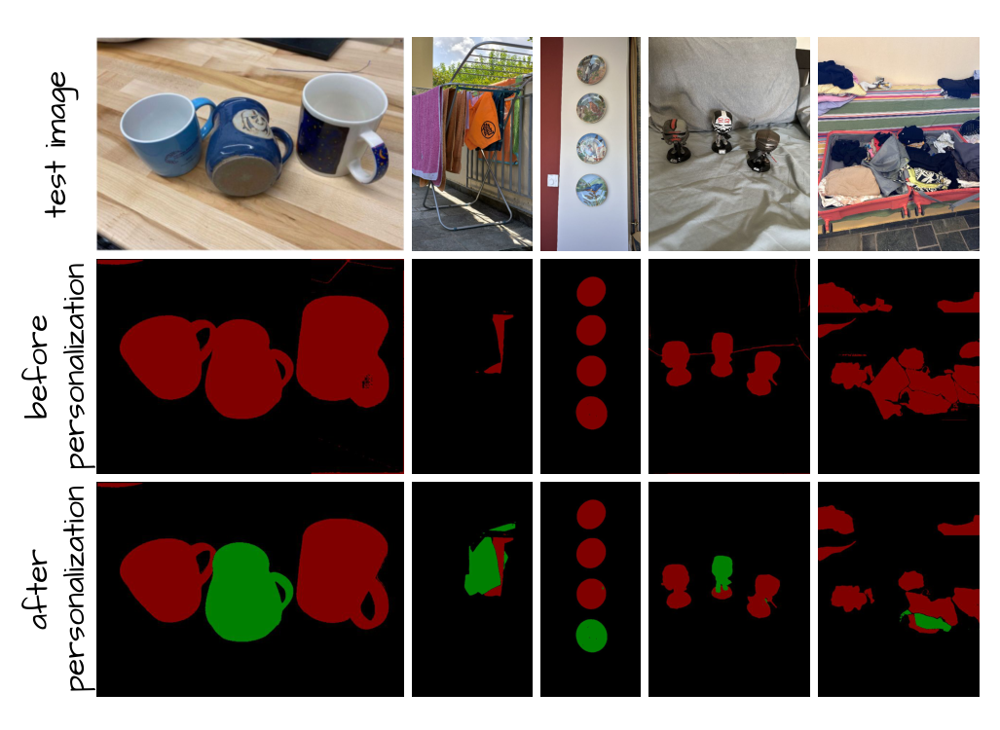

RNS 深读：开放词表分割只缺"几张带标注的图"，为什么前人把文本预测和视觉预测"事后相加"就是补不上这道监督缺口？
开放词表分割（OVS）想做的事很朴素：给一张图、给一组测试时才定下来的类别名，把每个像素分到某一类，而且类别集合可以任意换。它的天花板被两件事压着——（1）撑起 OVS 的 VLM 只见过图像级（image–text）监督，做不细像素级定位；（2）自然语言本身有歧义（"骑车的人"到底标 person 还是 motorcycle？）。一个直觉的补法是：给每个类配几张像素标注的图当视觉支撑，把问题从"零样本"挪到"少样本"。但补丁一打上，真正的核心问题就冒出来了：文本支撑和视觉支撑，到底该怎么融合？前人（kNN-CLIP、FREEDA）的做法是各自出一张预测图、再手工后期相加（late hand-crafted fusion）——本文（RNS, Retrieve and Segment）证明这条路有结构性缺陷：支撑一多就被启发式拖累、缺类时直接崩。RNS 换了个层次——在原型层先把两种模态融成 $f=\lambda t+(1-\lambda)v$，再用检索给每张测试图现搭训练集，per-image 训练一个轻量线性分类器，A100 上不到 1 秒。结果：用 DINOv3.txt+SAM、每类 20 张图，把与全监督的差距压到 11.5 mIoU，比零样本 +34，而标注量只用全监督的 ~5%。
{kind=link}

核心问题：缺口到底缺在哪？为什么不是"再标更多文本/再加层网络"¶
问：OVS 落后全监督，常见说法是"VLM 不够强"。这个诊断够用吗？
引：作者把缺口拆成两条独立的病因，而且都不是"再训一个更大的 VLM"能直接治的——这一步决定了后面整套方法的形状。
答：缺口有两个根源。其一，VLM（CLIP 一类）是用图像级 image–text 对比训练出来的，它学到的是"整张图配整句话"的对齐，patch 级定位是副产品——所以原生 VLM"dense localization 很差"。其二，语言本身有歧义：类名/描述常常不足以指定像素级边界（teaser 里"骑车的人"就是典型）。关键观察是：这两条都不是文本侧能补全的——再精细的 prompt 也改不了"图像级监督"这个先天约束，也消不掉语言歧义。能直接注入"像素级、无歧义"信息的，只有带像素标注的真实图像。于是作者把任务从零样本改造成少样本：每个类除了文本支撑（类名），再配一个视觉支撑集（几张像素标注图）。
问：既然要补视觉支撑，为什么不直接像传统 few-shot segmentation 那样在 base 类上 meta-learn？
引：作者明确把自己和 few-shot segmentation、test-time adaptation 划清界限——区别在"开放世界假设"。
答：传统 few-shot 分割（原型网络、episodic N-way 训练）默认闭世界：类别集合训练时就固定。而 OVS 的设定是类别集合测试时任意给定、还会动态增长（teaser 的 $A\subseteq B$）。作者要的是：支撑集随时可扩、且有些类可能根本没视觉支撑、有些类可能没文本名（医学/遥感里命名都难）。这逼出四种设定——full-support、partial-visual-support（部分类缺图）、partial-textual-support（部分类缺名）、only-textual-support（退化回零样本）。一个真正可用的方法必须在这四种设定下都不崩——这是 RNS 设计的硬约束，也是它和 kNN-CLIP/FREEDA 拉开差距的地方。
贡献拆解：作者明确提出的 vs. 读者可推断的¶
作者明确列出的贡献（论文原文四条）：
- 系统化少样本 OVS 设定：研究多种少样本设定，用"像素标注的视觉样例"去丰富文本 prompt（full / partial-visual / partial-textual / only-textual 四档）。
- RNS 方法：一个检索增强的测试时适配器，学到的融合比前人的手工融合更有效。
- 显著缩小零样本↔全监督差距，同时保住开放词表的泛化能力。
- 支持动态扩张 + 细粒度任务：支撑集可在线增长（开放世界），并能无改动迁到 personalized segmentation（区分类内某个特定实例）。
读者可推断的启发（非作者结论，标注为推断）：
- RNS 的"融合在原型层、决策交给 per-image 线性分类器"是一种把"模态融合"从手工设计外包给每图一训的优化的范式——这与"测试时训练（TTT）"的思路同源，可推断它对 backbone 越强（DINOv3）收益越大（图 3 右印证）。
- "只存视觉原型、不存原图特征"使内存可控、支撑集可增量更新——可推断这是它能落地"持续演化开放世界"的工程前提，而非纯精度技巧。
kNN-CLIP：用像素标注图建一个"类向量"记忆库，测试时按 k 近邻给区域贴标签——但它对"没标注样例的类"无能为力，且文本/视觉是手工后期融合。FREEDA：把文本类特征经检索"扩展成视觉对应物"，构成一个非参数视觉分类器再与零样本文本分类器相加；原版用生成的视觉样例，本文为公平比较改成用真实支撑图。RNS 与两者的本质差别：融合从"后期相加预测图"挪到"原型层 + 每图一训的线性分类器"。
数据：支撑集是"监督信号"而非训练集¶
RNS 没有"训练阶段"意义上的训练集——它不训 backbone、不预训分类器。数据在这里扮演两个角色：支撑集（监督信号）与评测基准。
| 角色 | 具体数据 | 用途 |
|---|---|---|
| 视觉支撑集 | 每类 $B$ 张像素标注图（$B\in\{1,2,3,5,10,20\}$） | 提取 per-image 视觉类特征，构成检索记忆库；可在线扩张 |
| 文本支撑集 | 类名 / 文本描述 | 经 VLM 文本编码器得到文本类特征 $t_c$ |
| 主评测（6 个 OVS 基准，报平均 mIoU） | PASCAL VOC、PASCAL Context、COCO-Object、COCO-Stuff、Cityscapes、ADE20K | full / partial 支撑下与 kNN-CLIP、FREEDA、zero-shot 比 |
| 细粒度对照（与全监督比） | PASCAL Context-59、FoodSeg103、CUB | 表 2 的"bridging the gap"实验 |
"每类采样 $B$ 张支撑图"和"少样本基准的构造细节"作者放在补充材料；正文未给采样的全部细则——这里按论文披露明确标注"细节见补充材料"，不臆造。注意 $B$ 是"每类支撑图数"，不是 batch size。
Pipeline：支撑构造 → 测试时训练 → 推理，三段各解决什么¶
{kind=link}

问：三段流程里，每一段如果抽掉会坏在哪？
引：逐段问"为什么需要它"。
答：支撑构造解决"原始支撑图太大、且两模态有 modality gap"——直接拿原图特征去和文本拼会因模态鸿沟失效（论文明说"直接组合不 work，实验已证"），所以先 pool 成紧凑视觉原型、再在原型层做融合。抽掉它 → 退回 kNN-CLIP 式的"原始特征 + 手工融合"。测试时训练解决"如何把支撑信息注入这张具体测试图"——它不是在所有类上训一个全局分类器，而是检索出与当前图相关的支撑再 per-image 训一个小分类器；抽掉检索 → 训练集被无关类淹没（图 5 的随机/最远变体掉点）。推理这段把 patch 级换成 SAM region 级是可选增益：借 SAM 大规模训练的定位能力提精度，代价是推理更贵。
方法：为什么"原型层融合 + 检索式测试时训练"能赢"后期手工相加"¶
0. 先把零样本基线写清楚（后面所有东西都建在它上）
图像 $I\in\mathbb{R}^{H\times W\times3}$ 过 VLM 视觉编码器，得到 patch 级特征矩阵 $X\in\mathbb{R}^{n\times d}$，$n=h\times w$ 是 patch 数。类名 $c$ 过文本编码器得到文本类特征 $t_c\in\mathbb{R}^d$。视觉、文本特征都归一化到单位长度。零样本预测就是 patch 特征和文本特征点积、再 softmax：
公式读法：这就是 MaskCLIP 一类零样本 OVS 的标准做法——把"分类器权重"换成"文本类特征"，patch 特征去和它比相似度。式 1 的问题正是动机里那两条：$x_j$ 来自图像级监督的 VLM，定位糙；$t_c$ 来自有歧义的语言。RNS 要做的，是给这个点积分类器换上一个从视觉支撑现学的、更懂这张图的分类器。
1. 视觉类特征：把像素标注 pool 成原型
给一张支撑图 $I^i$ 和它的像素标注 $Y^i\in\{0,1\}^{H\times W\times C}$，提取 patch 特征 $X^i$，把全分辨率标注下采样、reshape 成 patch 级软标签 $P^i$（插值后不再是 0/1，按类做 $L_1$ 归一化）。然后用软标签把 patch 特征 pool 成 per-image 视觉类特征：
所有支撑图的 per-image 视觉类特征并起来，就是视觉支撑特征集 $V=\bigcup_{i=1}^{M}\{v_c^i:c\in C_i\}$（式 3）。再按类把它们求和聚合成视觉类特征 $v_c=\sum_{i\in I_c}v_c^i$（式 5，$I_c$ 是含类 $c$ 的支撑图集合）。
2. 融合：为什么必须在原型层做，而且要多个 $\lambda$
问：有了视觉原型 $v_c$ 和文本原型 $t_c$，为什么不直接把视觉支撑特征和文本拼起来？
引：作者给了一个明确的失败理由——modality gap。
答：VLM 里视觉和文本特征之间存在模态鸿沟（modality gap，论文引 [41]）：即使在同一空间里，图像特征和文本特征整体上落在不同的子区域。而 RNS 的目标是分类"图像 patch 级特征"。把 patch 级视觉支撑特征直接和文本特征拼，"组合得不好（实验已证）"。解法是为每个类造一个融合类特征，用一个混合系数 $\lambda$ 在文本原型和视觉原型之间插值：
关键设计：融合不只用一个 $\lambda$，而是用一组 $\Lambda\subseteq[0,1]$，得到一族 fused 类特征 $F=\{f_{c\lambda}:c\in C,\lambda\in\Lambda\}$（fused 支撑特征集）。
3. 检索：为每张测试图现搭训练集
对测试图 $I^q$，特征矩阵 $X^q$，patch 特征 $x_j^q$。RNS 要为它新训一个线性分类器 $g_\theta:\mathbb{R}^d\to\mathbb{R}^C$。训练数据怎么来？——检索：每个测试 patch 特征去视觉支撑集 $V$ 里取 $k$ 近邻，并起来成检索到的视觉支撑特征集：
4. 测试时训练的损失：三项各管一摊
(a) 视觉支撑损失——让分类器对检索到的视觉支撑特征分对类：
(b) 类相关权重 $w_c$——检索难免捞进无关类的支撑特征，用测试图整图特征和文本特征的相似度来"压"无关类的权重：
公式读法：$w_c$ 是 RNS 抗"检索噪声"的关键。检索是 per-patch 的、必然会捞进一些不该出现的类；$w_c$ 用整图级零样本先验把这些类的损失贡献压下去。消融（表 1）显示去掉 $w_c$ 各档都掉点，证实它确实在"抑制无关检索类"。
(c) Fused 支撑损失——把文本信息经 fused 支撑集注入。只对"检索到的视觉支撑里出现过的类"$C_r$ 训练 fused 类特征：
full 支撑下总损失 $L=L_v+\beta_f L_f$。训练完，$g_\theta$ 作用在测试图 patch 特征上出低分辨率预测，再上采样成最终分割图。
问：把这四步合起来看，RNS 到底用什么机制赢了"后期手工相加"？请从两个独立角度交叉验证。
引：一个角度是"融合在哪一层"，另一个角度是"决策由谁做"。
答：角度一（融合层级）：kNN-CLIP/FREEDA 是 late fusion——文本分支、视觉分支各自出一张预测图，再用固定的、手工调的规则相加。这种规则一旦定死，就无法随"支撑多寡 / 这张图的具体内容"自适应（实验里 kNN-CLIP 的融合启发式在 $B{=}1$ 有用、$B{>}5$ 反而拖累，正是这个症状）。RNS 是 early fusion at prototype level + learned decision——式 4 在原型层融合，再让 $g_\theta$ 在测试时学出最佳决策面。角度二（决策主体）：late fusion 的决策是"人写的加权公式"；RNS 的决策是"每张图新训的线性分类器"，它能根据检索到的相关支撑现学一个 per-image 判别面。两个角度指向同一结论：把"模态怎么配合"从设计变成每图一训的优化，才是 RNS 的胜负手。图 5（检索消融）与表 1（去组件消融）正是这两个角度的独立证据。
5. 四种残缺设定怎么兜底（开放世界的硬约束）
- partial-visual（部分类缺图）：缺视觉支撑的类 $C_d$ 算不出 $v_c$、也算不出 $f_{c\lambda}$。RNS 用零样本预测式 1 判断测试图里是否疑似含这些类（把 $\hat P^q$ 转 one-hot、按类 $L_1$ 归一化得 $\tilde P^q$），对疑似出现的类用测试图自己的伪标签 pool 出视觉特征 $v_c=\sum_j \tilde P^q_{jc}x_j^q$（式 11），这样这些类也能进式 4 融合。
对这些伪标签来的 fused 特征，因为类归属不确定，额外加一项 伪标签损失（KL 散度）：$L_p=\sum_{c\in C\cap C_d}\sum_{\lambda\in\Lambda}w_c\,\mathrm{KL}\!\left(\hat p_{c\lambda}\,\|\,g_\theta(f_{c\lambda})\right)$（式 12）。此时总损失 $L=L_v+\beta_f L_f+\beta_p L_p$。 - partial-textual（部分类缺名）：缺类名的类用"有名类的平均文本特征"作中性语义先验填上，保证所有类都平等进损失，避免偏向"双支撑都有"的类。
- only-textual（全缺名 = 零样本）：没有任何文本特征 → 令 $\Lambda=\{0\}$、所有 $w_c=1$，退化成"w/o text"基线。
- region-proposal（可选）：有 SAM 时，把每个 mask 下采到 patch 分辨率、按 region 做 $L_1$ 归一化得 $\bar S$，pool 出 region 级特征 $x_r=\sum_j \bar S_{jr}x_j^q$（式 13），在 region 级分类再映回 mask——借 SAM 的定位力提精度。
这套"四档兜底"正是回应动机里那条硬约束：支撑残缺且动态增长时也别崩。其中"支撑集维护"被设计成增量式——新支撑图到了，只需更新 $V$、$v_c$、$f_{c\lambda}$、$F$，无需重训任何东西，所以能在线扩张。
训练账本：没有训练阶段，只有"每图一训"¶
RNS 最反直觉的一点：它没有常规意义上的训练。backbone 冻结、不预训分类器，唯一被"训"的是每张测试图临时新建的线性分类器 $g_\theta$。论文披露的配置：
| 项目 | 设置 |
|---|---|
| VLM backbone | OpenCLIP ViT-B/16（LAION 训练）+ MaskCLIP trick；以及 DINOv3 ViT-L/16 经 dino.txt 适配得到文本对齐 patch 特征（记作 DINOv3.txt） |
| 区域提议 | SAM 2.1 Hiera-L，每张 query 图用 $32\times32$ 点网格（每点一个 mask）+ 非极大抑制保证不重叠 |
| 被训的参数 | 仅 per-image 线性分类器 $g_\theta:\mathbb{R}^d\to\mathbb{R}^C$（backbone 全程冻结） |
| 测试时训练耗时 | 论文正文：每张测试图的测试时训练在 NVIDIA A100 上不到 1 秒 |
| 学习率 / batch / 迭代数 | 正文未给通用值；闭集对比实验（图 6）中用"支撑集 train-val 划分"调过 lr/batch/迭代数。具体数值——论文正文未说明，见补充材料 |
| $k$ / $\Lambda$ / $\beta_f,\beta_p$ 取值 | 正文给了机制，具体超参取值——论文正文未说明，见补充材料 |
关于算力口径论文只给"A100 上 <1 秒/图"这一相对量，未披露总 GPU-hours。若要估算整套基准的总测试时计算量，应明确"按论文披露数字粗略估算，不等同于实际账单"——本文不做此估算，因正文未给评测图像总数与并发设置。
实验：四档设定逐一验证"别崩"¶
主结果一：full 支撑下随 $B$ 增长（图 3）
{kind=link}

关键数字（论文 §4.2 原文）：相对零样本，RNS 仅用每类 1 张图就拿到 +7.3% mIoU（OpenCLIP）、+18.4% mIoU（DINOv3.txt）。$B{=}1$ 时 with-text 明显高于 w/o-text，$B{=}20$ 时两者打平——印证"文本在支撑稀疏时最值钱，支撑变密后视觉主导"。对手的失败模式：kNN-CLIP 的融合启发式 $B{=}1$ 有用、$B{>}5$ 反而拖累（手工融合对支撑量敏感）；FREEDA 即使有文本也几乎不获益。
主结果二：partial 支撑下退化是否平滑（图 4）
{kind=link}

这两张图直接验证开放世界硬约束："缺类是开放世界里不可避免的"，而 RNS 是唯一在缺视觉/缺文本下都平滑退化、不跌破零样本的方法。左图的"去伪标签损失→陡降"是把式 12 的作用单独拎出来证明。
主结果三：与全监督的差距能压到多少（表 2）
| Method | Training set | Annot. | VOC | City | ADE | C-59 | Food | CUB | Avg. |
|---|---|---|---|---|---|---|---|---|---|
| SAN† | COCO | 118k | – | – | 32.1 | 57.7 | 24.5 | 19.3 | – |
| CAT-Seg∗ | COCO | 118k | 82.5 | 47.0 | 37.9 | 63.3 | 33.3 | 22.9 | 47.8 |
| LPOSS+ | ✗ | ✗ | 62.4 | 37.9 | 22.3 | 38.6 | 26.1 | 12.0 | 33.2 |
| CorrCLIP | ✗ | ✗ | 76.4 | 49.9 | 28.8 | 47.9 | – | – | – |
| DINOv3.txt + SAM | ✗ | ✗ | 31.3 | 39.3 | 27.7 | 36.3 | 27.2 | 5.8 | 27.9 |
| + RNS ($B{=}1$) | Domain | 66 | 73.2 | 59.1 | 37.3 | 52.7 | 42.8 | 34.0 | 49.9 |
| + RNS ($B{=}20$) | Domain | 964 | 82.1 | 61.7 | 47.8 | 62.5 | 52.2 | 65.2 | 61.9 |
| Fully Supervised | Domain | 20k | 90.4 | 87.0 | 63.0 | 70.3 | 45.1 | 84.6 | 73.4 |
这张表要支撑的核心结论："bridging the gap"。读三处：（1）RNS $B{=}20$ 平均 61.9，离全监督 73.4 只差 11.5，比零样本基线（DINOv3.txt+SAM 的 27.9）+34。（2）RNS $B{=}20$ 超过第二好的 OVS 方法 CAT-Seg（47.8）+14.1，而标注量只用 964 vs CAT-Seg 的 118k、全监督的 20k。（3）增益在离 COCO-Stuff 域远的细粒度集（CUB 5.8→65.2、Food 27.2→52.2）上尤其大——因为 CAT-Seg 这类方法是在 COCO-Stuff 上训的，换域就吃力，而 RNS 直接用目标域的少量支撑。
消融：每个组件是不是真在做它该做的事¶
检索到底有没有"选到相关支撑"（图 5）
这是验证"机制名副其实"的关键实验：把 RNS 检索到的视觉支撑集 $V_r$（式 6）换成各种替代品，看掉多少：
- 换成 $V$ 的随机子集 → 大幅掉点（证明"用相似图区域"是关键）；
- 只保留"检索到的类" $C_r$、用其全部视觉特征 $V_{C_r}$ → 比默认略低（说明 $V_{C_r}$ 里仍有被 RNS 过滤掉的无关样例）；
- 从 $V_{C_r}$ 随机取子集 → 比从 $V$ 随机取明显好（限定在语义相关类上有益）；
- 取离 query 特征最远的样例 → 最差，甚至低于从 $V$ 随机采样。
四个变体连成一条单调链：越偏离"检索相关支撑"，越差。这就独立证明了"RNS 的检索确实识别出了相关支撑特征"，而非碰巧。
去组件消融（表 1）
| Method | $B{=}1$ | $B{=}5$ | $B{=}10$ |
|---|---|---|---|
| RNS（完整） | 41.59 | 47.87 | 49.02 |
| RNS w/o $w_c$ | 41.20 (−0.39) | 47.43 (−0.44) | 48.54 (−0.48) |
| RNS w/o $w_c$, $\Lambda=\{0.8\}$ | 36.40 (−5.19) | 46.55 (−1.32) | 48.38 (−0.64) |
| RNS w/o text | 34.11 (−7.48) | 45.71 (−2.16) | 48.00 (−1.02) |
逐行读：（1）去掉类相关权重 $w_c$，各档都掉（−0.39~−0.48），证实它在"压无关检索类"。（2）再把多 $\lambda$ 砍成单一 $\lambda{=}0.8$，低样本时崩得最狠（$B{=}1$ 再掉到 −5.19）——印证"多 $\lambda$ 让分类器自己挑文本/视觉配比"在支撑稀疏时最关键。（3）再去掉文本（w/o text）继续掉（$B{=}1$ 共 −7.48），且差距随 $B$ 增大而缩小（$B{=}10$ 只剩 −1.02）——再次印证"文本在低样本时最值钱、支撑变密后视觉主导"。三行连起来，正好把式 8（$w_c$）、式 4 多 $\lambda$、文本支撑三个组件的贡献逐一分离。
闭集对照 + 个性化分割（图 6/7）
图 6（闭集对照）显示：把支撑集"离线"训一个线性分类器或微调整网，在低样本时不如 RNS——离线在全支撑上训会过拟合，而 RNS 的"测试时检索 + 只看相关支撑"更省样本；微调整网在样本足够时更强但要额外算力。"离线微调 + RNS"组合最好，说明文本监督与测试时适配是互补的。
{kind=link}

局限与复现门槛¶
- 失败模式（论文承认）：个性化分割里会因"颜色线索 + 上下文不足"误分（橙毛巾→泳衣）。部分遮挡能分对，但强依赖低层视觉线索时仍会错。
- 对零样本先验的依赖：partial-visual 兜底要用零样本式 1 判断"测试图里是否含某缺图类"（式 11），这一步本身来自有歧义的文本分类器——若零样本先验在某域整体偏弱，伪标签质量会受限。
- SAM 的代价：region 级提精度，但每张 query 图要跑 SAM 2.1 + $32\times32$ 点网格 + NMS，推理更贵。patch 级更便宜但精度低一截（图 3 右虚线 vs 实线）。
- 复现门槛：正文未给 $k$、$\Lambda$、$\beta_f$、$\beta_p$、lr/batch/迭代数的具体值（均"见补充材料"），逐设定的支撑采样细节也在补充材料；要精确复现需补充材料 + 官方代码。代码仓库已开源（见下）。
- 评测口径：主结果报"6 个 OVS 基准的平均 mIoU"，逐数据集结果在补充材料；表 2 的"全监督"是逐数据集挑最好方法拼出来的上界，并非单一模型。
总结：一句话 + 三条 takeaway¶
一句话：RNS 把"开放词表分割怎么用几张标注图"这件事，从前人的"后期手工相加两张预测图"，改成"原型层融合 $f=\lambda t+(1-\lambda)v$ + 检索现搭训练集 + 每图一训一个线性分类器"，A100 上 <1 秒/图，把与全监督的差距压到 11.5 mIoU。
- 诊断决定方案：缺口 = 图像级监督 + 语言歧义，只能靠真实像素标注兜底；于是核心问题变成"两种模态怎么融"，而答案是"别在预测层手工融，要在原型层融 + 让优化做决策"。
- 检索是桥：它把"庞大支撑库"和"单张测试图"接上——per-patch kNN 让训练集里多是"这张图真有的类"，再用 $w_c$ 压掉漏网的无关类。图 5 的随机/最远消融是它"名副其实"的直接证据。
- 开放世界鲁棒性是卖点：四档残缺设定（缺图/缺名/全缺名）都平滑退化、不跌破零样本，支撑集还能在线增量扩张、顺带做个性化分割——这才是它区别于 kNN-CLIP/FREEDA 的根本。
推荐阅读路径：图 1（为什么两模态都不能单用）→ §method 式 4（为什么在原型层融、为什么多 $\lambda$）→ §method 式 6–10（检索 + 三项损失）→ 图 3/4（full/partial 全面超对手）→ 表 1+图 5（每个组件名副其实）→ 表 2（差距压到 11.5）。
参考与图片来源¶
- 论文：Aravanis, Stojnić, Psomas, Komodakis, Tolias. Retrieve and Segment: Are a Few Examples Enough to Bridge the Supervision Gap in Open-Vocabulary Segmentation? CVPR 2026（Highlight）. arXiv:2602.23339v1.
- 官方代码：github.com/TilemahosAravanis/Retrieve-and-Segment（HTTP 200 已核）。
- CVF Open Access：截至本文撰写时 CVPR 2026 该论文页未解析（404），故未引 CVF 链接。
- 关键对照方法（论文引用）：kNN-CLIP、FREEDA、CAT-Seg、SAN、LPOSS+、CorrCLIP；backbone：OpenCLIP（LAION）、DINOv3 + dino.txt、SAM 2.1。
关于方法论与归因本文的机制拆解（动机先行、每个近似/假设显式标注、关键结论从"融合层级"与"决策主体"两个独立角度交叉验证）遵循 kexue:su（苏剑林 / kexue.fm）方法论。但在 kexue:su 语料库中以"检索增强 / 测试时训练 / 开放词表分割 / 模态融合 / 原型层融合 vs 后期融合"检索，未返回主题对应的卡片（实际返回的前五条为 SimBERT [archives/7427]、图像分类 fine-tune [archives/4611]、DGCNN 阅读理解问答 [archives/5409]、DGCNN 信息抽取 [archives/6671]、FLASH 高效 Transformer [archives/8934]，均为 NLP 文本生成/问答/注意力机制方向，与本文的视觉开放词表分割、检索增强测试时训练不相关）。按归因红线，本文仅应用方法论、不引用任何苏剑林 archive。
图片来源所有图片均为从论文 PDF（arXiv:2602.23339）本地提取的高分辨率 PNG，用于学术评注：图 1（teaser，p1）、图 2（pipeline，p4）、图 3（full 支撑曲线，p6）、图 4（partial 支撑曲线，p6）、图 7（个性化分割，p8）。表 1、表 2 为论文原表完整转写；表 A、表 B 为据论文文本整理的辅助表（非论文原表，已标注）。